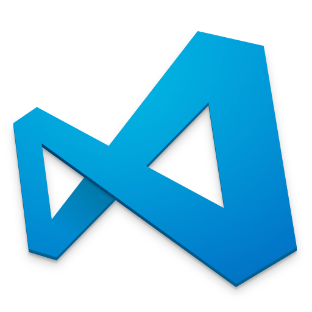

Web-basierte Anwendungen 1
Tooling
19. Oktober 2017
Studiengang Medieninformatik an der Technischen Hochschule Köln
Campus Gummersbach
Ziele des Trainings
- Tools kennenleren einrichten, die für das Web Development (fast) unverzichtbar sind
- Den Workflow vom Erstellen bis zum Deployen einer Website kennen und verstehen
- Eine individuell angepasste Über-mich Seite über den ADV-Server online stellen
Wir brauchen ein paar Tools um arbeitsfähig werden
- Browser
- Web Develpopment Tools
- Editor
- Terminal / SSH Client
- FTP Client
Editoren
Brackets
http://brackets.io

Visual Studio Code
https://code.visualstudio.comTerminal // SSH Client
macOS und Linux
- Bordmittel können verwendet werden
- macOS: Terminal
- Linux: Bash-Shell
Windows
- Putty
http://www.putty.org
ab Windows 10
- Linux-Bash ist als Subsystem verfügar
- Ist in der Standartkonfiguration nicht aktiviert
- Anleitung zur Aktivierung der Linux Bash
FTP-Client
Cyberduck
https://cyberduck.ioHands-on!
- Laden Sie sich alle benötigten Tools herunter,
installieren und richten Sie diese ein. - Laden Sie sich das Arbeitspaket aus von der GitHub Seite herunter
- Passen Sie die gegebene HTML-Datei an
- Fügen Sie ein Profilfoto in das vorgesehen Verzeichnis hinzu
- Verifizieren Sie ihre Änderungen an der HTML-Datei zwischendurch im Browser
Dateien auf dem Server deployen
- Das ADV-Labor stellt für jeden Nutzer mit einer GMID ein Homeverzeichnis zur Verfügung, der auch als Webspace genutzt werden kann.
- Zugangsdaten für FTP-Programm und Konsole:
- Server: advm1.gm.fh-koeln.de
- Username und Passwort: GMID
- Webspace muss zunächst eingerichtet werden, damit die Webseiten von außerhalb des Servers aufgerufen werden können.
- Dazu gibt es eine Anleitung auf der Website vom ADV Labor
Hands-on!
- Richten Sie Ihr FTP-Programm ein, so dass Sie auf die ADV-Maschine Zugriff haben
- Richten Sie anschließend ihren Webspace ein und übertragen Sie die Daten für die Website auf den Webspace
- Rufen Sie die HTML-Datei im Browser auf